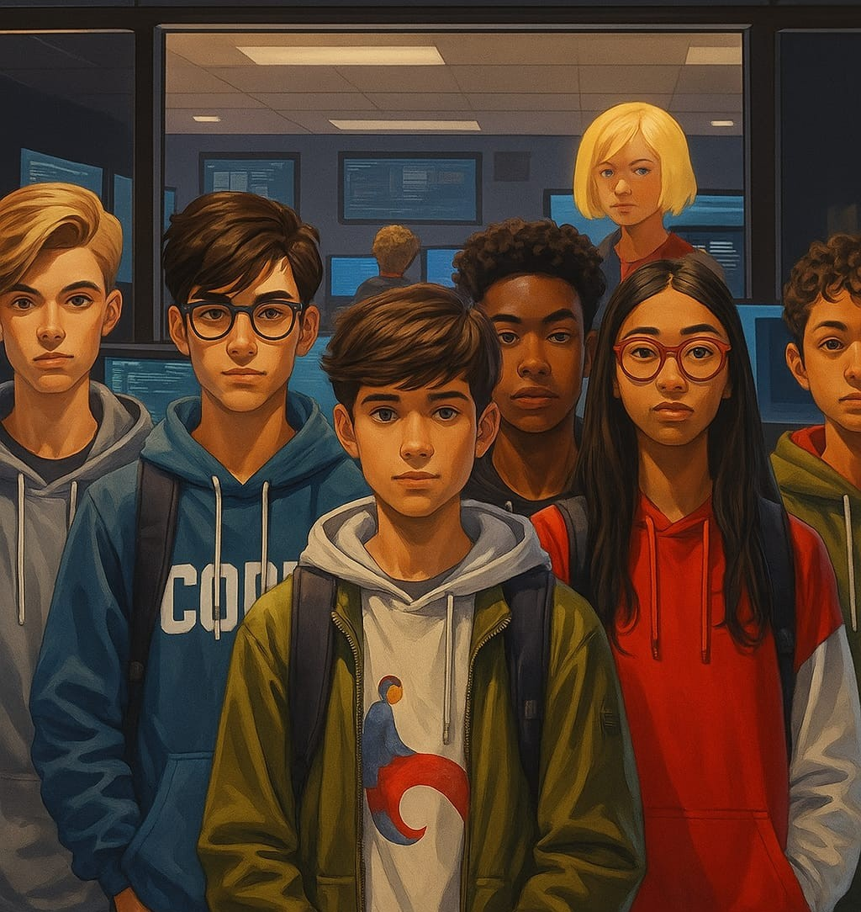

C.S.E Branch
Diploma Students
CONTACT
999-9999-999
 kishankumar.kt2024@gmail.com,
kishankumar.kt2024@gmail.com,
sahilsharma.sr2024@gmail.com,
Earthdeep.ku2024@gmail.com,
kartikeykumar.kt2024@gmail.com
Near B.M.P-6 , pusha road ,
muzaffarpur,bihar,
India
NSSE school katehar baulipar
surajgarha lakhisarai bihar
India
Sugar factory colony,
Motipur Muzaffarpur Bihar
India
 www.linkedin.com
www.linkedin.com
EDUCATION
- Diploma’s Degree
Government Polytechnic Muzaffarpur ,2027 - 10th Grade
[Pristine Children`s High School], [Muzaffarpur],2024
SKILLS
- Communication
- Teamwork
- Critical Thinking
- Time Management
- Leadership
- Adaptability
- Project Management
- Presentation Explainer
- frontend Webdeveloper
ACHIEVEMENTS
- Data Analytics intern
at skillfield mentor,
2025
CERTIFICATES
- Data Analytics intern
Skillfield Mentor,2025 - Introduction to cyber security
cisco, 2024 - It Essential 8
cisco, 2025 - HTML
Spoken Tutorial, 2025
PROFESSIONAL OVERVIEW
- Motivated and tech-enthusiastic Computer Science diploma student with a strong foundation in programming and a growing passion for front-end web development. Currently pursuing a Diploma in Computer Science and Engineering after completing Class 10th in 2024. Actively learning core programming languages including C, C++, Java, and Python, along with web technologies as part of a focused goal to explore and grow in the coding and software development field. Dedicated to becoming a skilled front-end web developer by continuously building knowledge in HTML, CSS, JavaScript, and modern UI frameworks. Eager to apply technical skills, creativity, and a problem-solving mindset to real-world tech projects and future opportunities in the IT industry.
WORK EXPERIENCE
Data Analytics Intern
Skillfield Mentor | Remote | 1-Month Internship – 2024- Gained hands-on experience in data analytics fundamentals including data cleaning, visualization, and basic interpretation.
- Worked with tools such as Microsoft Excel and Google Sheets to organize and analyze datasets.
- Learned the importance of data-driven decision-making and how to communicate insights effectively.
- Developed a strong foundation for further learning in data science and analytics-related tools.
-
Front-End Development Practice Projects
Self-Initiated | Remote | 2024 – Present - Designed and developed responsive web pages using HTML, CSS, and JavaScript.
- Practiced creating clean user interfaces with attention to layout and design principles.
- Used GitHub for version control and code collaboration.
- Currently learning frameworks such as Bootstrap and React to enhance front-end capabilities.